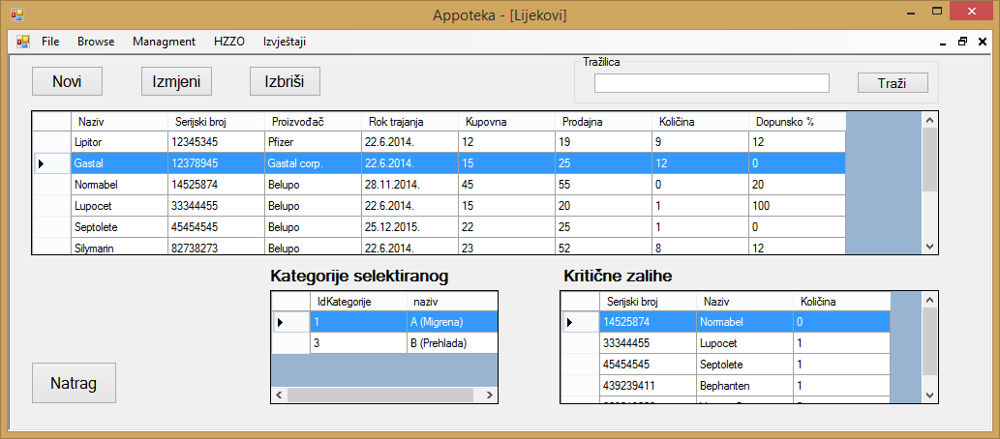
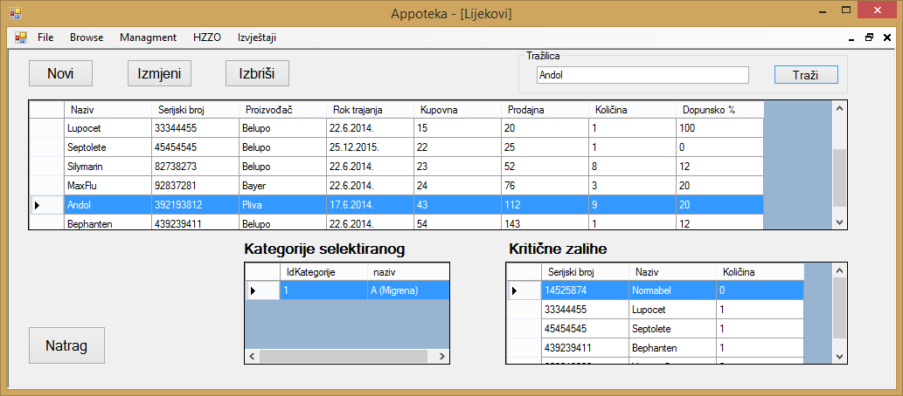
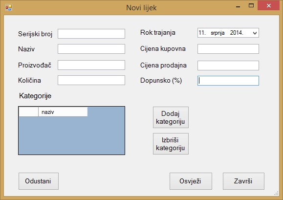
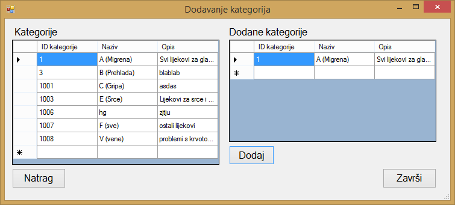
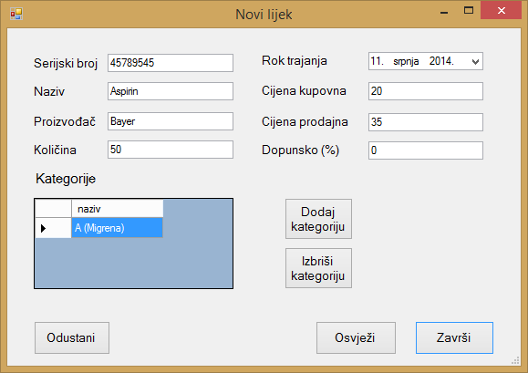

Klikom na gumb "Browse" u glavnom meniju otvara se izbor od tri stavke, to su "Lijekovi", "Narudžbe" i "Računi". Klikom na gumb "Lijekovi" otvara se prozor u kojemu se nalazi popis svih lijekova koji su trenutno uneseni u aplikaciju te su prikazani svi relevantni podaci o tim istim lijekovima.
Klikom na određeni lijek iz popisa lijekova u tablici "Kategorije selektiranog" pojavljuju se kategorije lijekova kojima označeni lijek pripada. U tablici "Kritične zalihe" prikazani su svi lijekovi kojima je količina na skladištu ispod optimalne količine kako bi se korisnik upozorio da iste treba naručiti.

Ako korisnik želi pretražiti dali određeni lijek postoji u aplikaciji, ili želi provjeriti određene podatke o tom lijeku, naziv toga lijeka može upisati u polje "Tražilica" te će se klikom na gumb "Traži" pronađeni lijek automatski označiti u popisu lijekova.

Dodavanje novog lijeka moguće je klikom na gumb "Novi" nakon čega se otvara prozor u kojemu se unose podaci o lijeku kojeg želimo unijeti.

Nakon što smo unjeli sve podatke o lijeku koji želimo dodati, možemo mu dodati kategoriju tako da pri prodaji lijeka možemo tražiti lijekove po njihovom namjenjenom djelovanju. Dodane kategorije također je moguće i brisati, a prilikom dodavanja ili brisanja kategorija moguće je klikom na gumb "Osvježi" osvježiti podatke kako bi vidjeli dali smo sve podatke dobro unijeli. Klikom na gumb "Završi" dodajemo novi lijek u aplikaciju te nam aplikacija porukom javlja dali je dodavanje lijeka bilo uspješno. Klikom na gumb "Odustani" možemo odustati od bilokakvih promjena koje smo napravili u ovom prozoru.

Dodavanje kategorije lijeka moguće je označavanjem željene kategorije iz tablice "Kategorije" te klikom na gumb "Dodaj" nakon čega se u tablici "Dodane kategorije" pojavljuje dodana kategorija. Kada smo dodali sve željene kategorije, klikom na gumb "Završi" izabrane kategorije se pojavljuju u tablici "Kategorije" u prozoru za dodavanje novog lijeka.
Ako korisnik želi izmjeniti određeni lijek, to može napraviti klikom na gumb "Izmjeni" pri čemu se otvara novi prozor u kojemu se nalaze podaci odabranog lijeka. Nakon što željene podatke izmjeni, potvrdu o izmjeni lijeka može napraviti klikom na gumb "Završi" nakon čega će se svi promjenjeni podaci spremiti.

Ako korisnik želi obrisati određeni lijek iz aplikacije, to može napraviti klikom na gumb "Izbriši" nakon čega će aplikacija korisnika pitati dali je siguran u svoj izbor. Klikom na gumb "Yes" lijek će se obrisati, dok će se klikom na gumb "No" odustati od postupka brisanja lijeka.

Klikom na gumb "Natrag" aplikacija korisnika vraća na početni zaslon.